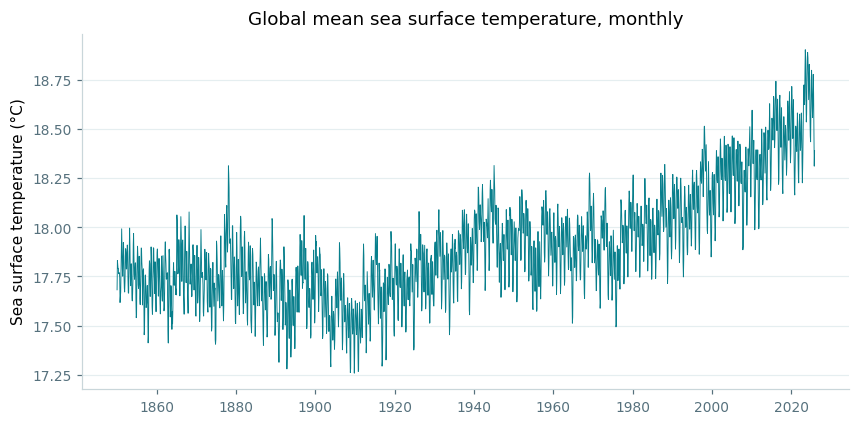
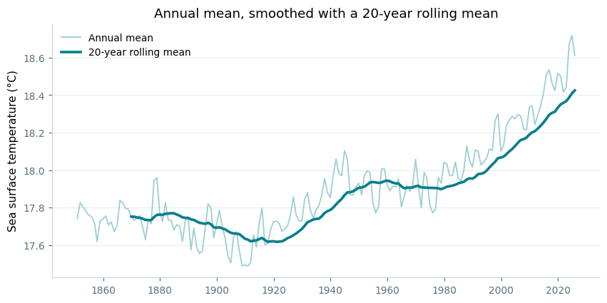
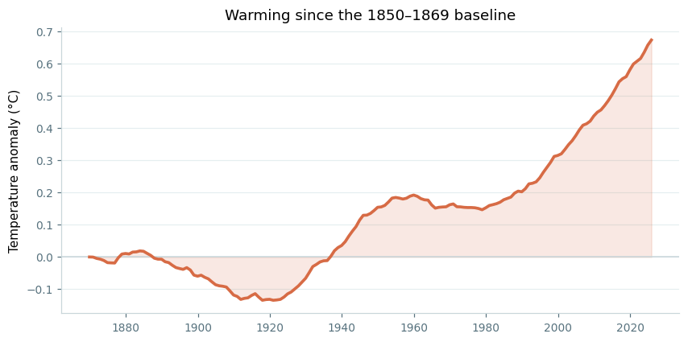
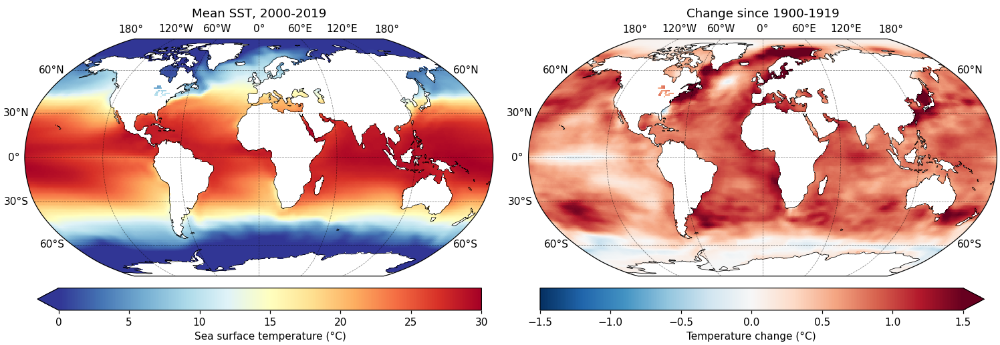

How much have the oceans warmed since 1850? Work a global sea surface temperature record down to a single clear signal, then map where the warming actually happened.
This example uses COBE-SST2, NOAA's monthly sea surface temperature record, which reaches back to 1850. It is served over THREDDS, so there is nothing to download:
import nctoolkit as nc ds = nc.open_thredds("https://psl.noaa.gov/thredds/dodsC/Datasets/COBE2/sst.mon.mean.nc")
That is a global 1° grid with one field per month for over 170 years — far too much to look at directly. Everything below is a way of reducing it to something you can read.
The record runs up to the middle of the current year, and an incomplete final year would drag the last annual mean upwards — the global mean sea surface temperature cycle peaks in the first half of the year, when the ocean-dominated southern hemisphere is in summer. Each example below starts by subsetting to whole years, which is why ds.subset(years=range(1850, 2026)) keeps appearing.
The obvious question is how much the ocean has warmed. spatial_mean() collapses each monthly field to a single global number, turning the whole dataset into one time series:
ds = nc.open_thredds("https://psl.noaa.gov/thredds/dodsC/Datasets/COBE2/sst.mon.mean.nc") ds.subset(years=range(1850, 2026)) ds.spatial_mean() ds.plot()

import matplotlib.pyplot as plt # a little shared styling, to match the rest of this page def style(ax): ax.spines["top"].set_visible(False) ax.spines["right"].set_visible(False) ax.spines["left"].set_color("#c9d6da") ax.spines["bottom"].set_color("#c9d6da") ax.tick_params(colors="#56717d", labelsize=9) ax.grid(axis="y", color="#e5eef0", linewidth=0.8) ax.set_axisbelow(True) df = ds.to_dataframe().reset_index() fig, ax = plt.subplots(figsize=(9, 4.2)) ax.plot(df.time, df.sst, color="#087f8c", linewidth=0.6) style(ax) ax.set_ylabel("Sea surface temperature (°C)") ax.set_title("Global mean sea surface temperature, monthly", fontsize=12)
A rise of roughly a degree is already visible. But this is monthly data, so the seasonal cycle and year-to-year variability make it noisy.
plot() gives you an interactive chart to explore in a notebook. The static figures on this page were drawn with matplotlib from to_dataframe() instead — the code is under each one.
Passing "year" to tmean() averages within each year instead of over the whole record, which removes the seasonal swing. rolling_mean() then smooths across years — here over a 20-year window:
ds = nc.open_thredds("https://psl.noaa.gov/thredds/dodsC/Datasets/COBE2/sst.mon.mean.nc") ds.subset(years=range(1850, 2026)) ds.tmean(["year"]) ds.spatial_mean() ds.rolling_mean(20) ds.plot()

# the figure shows both steps, so build the annual mean and the rolling # mean as two datasets annual = nc.open_thredds("https://psl.noaa.gov/thredds/dodsC/Datasets/COBE2/sst.mon.mean.nc") annual.subset(years=range(1850, 2026)) annual.tmean(["year"]) annual.spatial_mean() rolling = annual.copy() rolling.rolling_mean(20) df_a = annual.to_dataframe().reset_index() df_r = rolling.to_dataframe().reset_index() fig, ax = plt.subplots(figsize=(9, 4.2)) ax.plot(df_a.time, df_a.sst, color="#9ecfd4", linewidth=1.2, label="Annual mean") ax.plot(df_r.time, df_r.sst, color="#087f8c", linewidth=2.4, label="20-year rolling mean") style(ax) ax.set_ylabel("Sea surface temperature (°C)") ax.set_title("Annual mean, smoothed with a 20-year rolling mean", fontsize=12) ax.legend(frameon=False, fontsize=9)
The figure above shows both steps together: the annual mean in pale teal, and the 20-year rolling mean over it. The rolling mean only begins in 1869, once there is a full window behind it.
Absolute temperatures make the change hard to judge — the interesting quantity is how far the ocean has moved from where it started. annual_anomaly() does the whole job in one call, taking the first 20 years of the record as the baseline:
ds = nc.open_thredds("https://psl.noaa.gov/thredds/dodsC/Datasets/COBE2/sst.mon.mean.nc") ds.subset(years=range(1850, 2026)) ds.annual_anomaly(baseline=[1850, 1869], window=20) ds.spatial_mean() ds.plot()

df = ds.to_dataframe().reset_index() fig, ax = plt.subplots(figsize=(9, 4.2)) ax.axhline(0, color="#c9d6da", linewidth=1) ax.plot(df.time, df.sst, color="#d76b45", linewidth=2.4) ax.fill_between(df.time, 0, df.sst, color="#d76b45", alpha=0.15) style(ax) ax.set_ylabel("Temperature anomaly (°C)") ax.set_title("Warming since the 1850–1869 baseline", fontsize=12)
Now the story is plain. The ocean cooled slightly into the early 1900s, warmed through to the 1950s, held roughly flat for thirty years, and has risen steeply since about 1980 — ending some 0.7 °C above where it began.
A global mean hides where the warming happened. panel_plot draws several datasets side by side, so the recent mean state and the change since 1900 can be compared directly. Subtracting one dataset from another gives the change field:
recent = nc.open_thredds("https://psl.noaa.gov/thredds/dodsC/Datasets/COBE2/sst.mon.mean.nc") recent.subset(years=range(2000, 2020)) recent.tmean() early = nc.open_thredds("https://psl.noaa.gov/thredds/dodsC/Datasets/COBE2/sst.mon.mean.nc") early.subset(years=range(1900, 1920)) early.tmean() change = recent.copy() change.subtract(early) nc.panel_plot( {"Mean SST, 2000-2019": recent, "Change since 1900-1919": change}, ncol=2, shared_colourbar=False, colours=["RdYlBu_r", "RdBu_r"], limits=[[0, 30], [-1.5, 1.5]], legend=["Sea surface temperature (°C)", "Temperature change (°C)"], legend_position="bottom", )

Each panel needs its own colour scale here — one is an absolute temperature in the tens of degrees, the other a change of a degree or so either side of zero — which is what shared_colourbar=False is for. With it set, colours, limits and legend each take a list with one entry per panel.
The warming is close to universal, but far from even. Two features stand out against it: the pale patch in the North Atlantic south of Greenland, the so-called warming hole associated with a slowing overturning circulation, and the Southern Ocean, where deep water rising to the surface has kept warming slower than elsewhere.
copy() matters here. subtract() modifies a dataset in place, so subtracting early from recent directly would leave nothing to plot in the first panel. Copying first keeps recent intact.